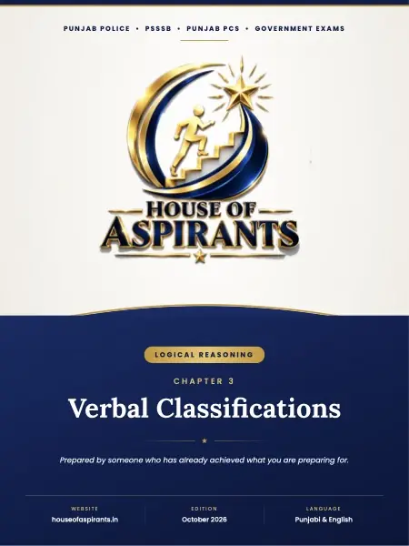

Finished reading? Check what you remember with a quick MCQ test.

Summary
CHAPTER 3 Verbal Classififications8< ਸ਼ਬਦੀ ਵਰਗੀਕਰਨ IN THIS CHAPTER · ਇਸ ਅ'? ਧਿਆਇ ਵਿੱਚ Basics you must know ਪਹਿਲਾਂ ਇਹ ਬੁਨਿਆਦ ਸਮਝੋ Classification means grouping items by a shared property. In a four-option odd-one-out question, three options satisfy one meaningful rule and one fails. Your job is to
Download
Download Verbal Classification - ਸ਼ਬਦੀ ਵਰਗੀਕਰਨ (Punjabi + English) (PDF) - 4.8 MB, 133 pages, hosted on this site. No sign-up, no email wall and no redirect through a third party.
About this file
- File name:
reasoning-verbal-classification-notes-punjabi-english.pdf - Pages: 133
- Size: 4.8 MB
- Published: 22 October 2026
- Filed under: Study Material
Where this file sits
- Subject: Reasoning
- Language: English
- Chapter: Chapter 3: Verbal Classifications
This page was generated automatically from content/study-material/reasoning/english/03 - Verbal Classifications/. Its subject, language and chapter come from the folders the file sits in, its part number from its place among the files beside it, and its title, slug and description from those. The page count and the summary were read out of the PDF itself - the file is the document.